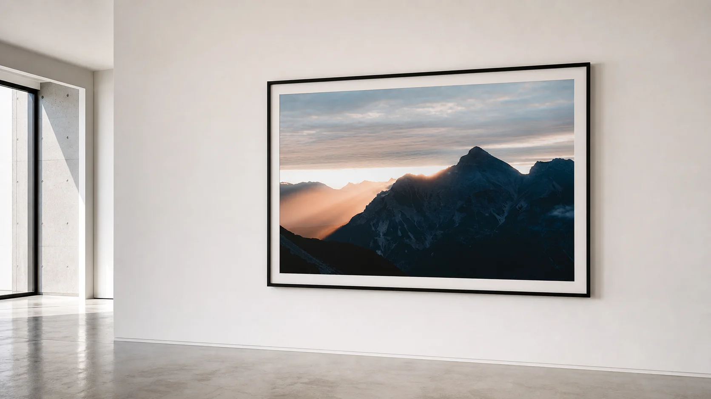
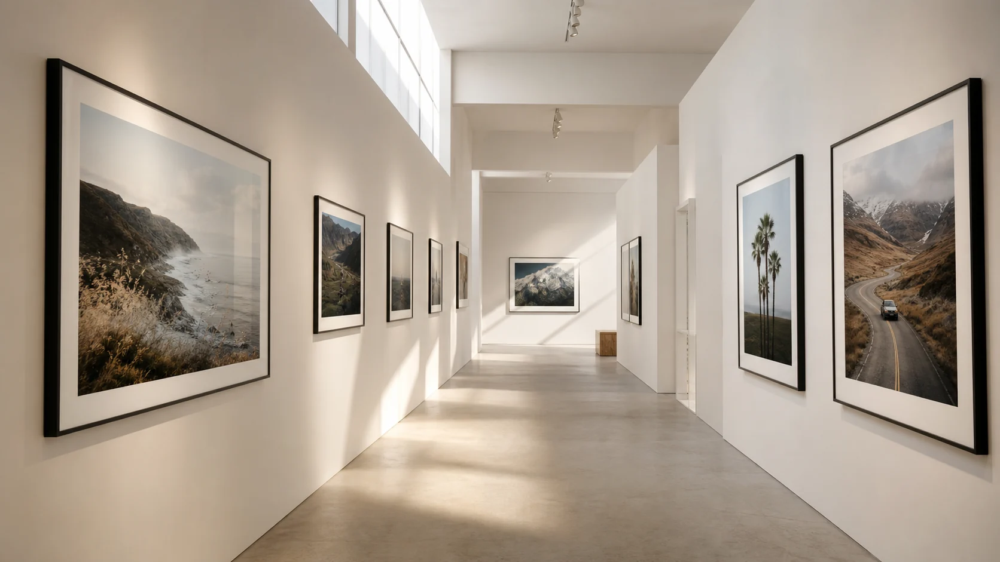
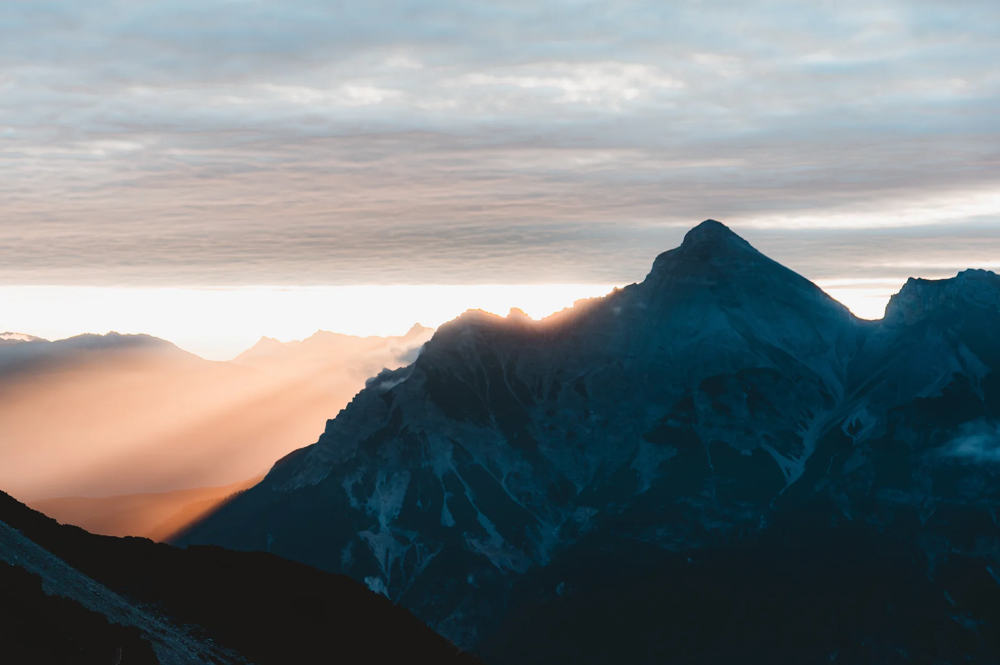
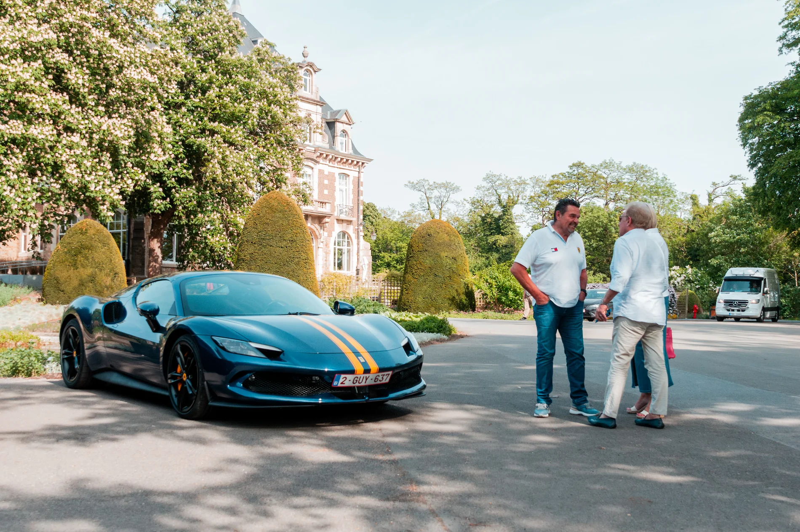
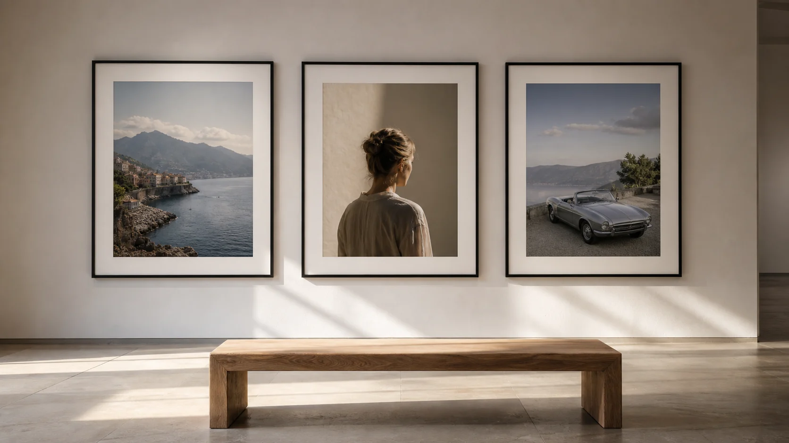
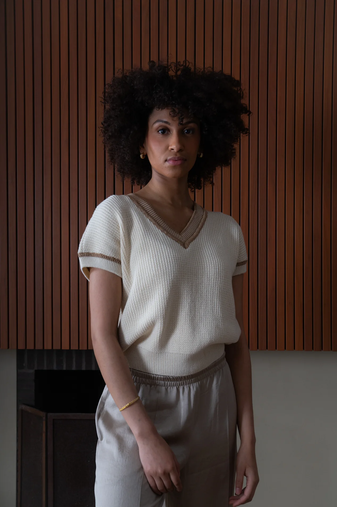

Atmospheric landscapes, often built around weather, distance and silence.

Photography portfolio
Geike Verniers
Belgium-based photographer capturing travel, portraits, automotive stories and commissioned moments with a calm editorial eye.
Enter the gallery01
A quieter room for stronger photographs.
Selected from Geike's existing portfolio and arranged like a small exhibition: generous spacing, slow rhythm, and only the images that carry a clear mood.

Room A
Walk the wall slowly.
The scroll now moves like a gallery visit: framed work, breathing space, light falling across the room, then a closer view of the photographs.


Room B
Light, frames, distance.
Generated gallery scenes are used only as atmosphere; Geike's photographs stay central and keep their original proportions.

02
Exhibition
03
Series
Cars treated as sculptural objects, with detail, setting and event energy in balance.
Soft editorial portraiture with careful color, natural posture and warm interiors.
Commercial work shaped with the same visual discipline as personal projects.

04
Photographs with atmosphere first.
Geike Verniers is a young photographer based in Belgium. Her work moves between travel, portraits, model photography, car tours, events and business commissions, always looking for the feeling around the moment as much as the moment itself.
05